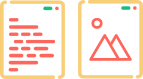
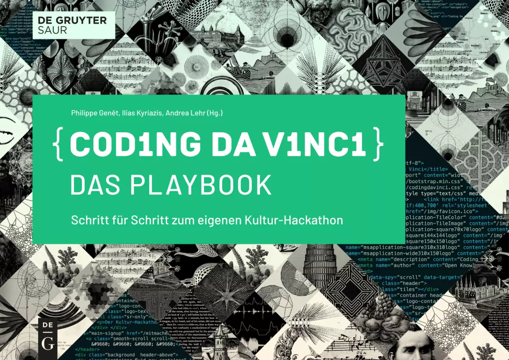

Was war Coding da Vinci?
Von 2014 bis 2022 vernetzte Coding da Vinci, der Kulturhackathon, Kultur- und Technikwelten miteinander und zeigte, welche überraschenden Möglichkeiten in offenen Kulturdaten stecken. In mehrwöchigen Sprintphasen entwickelten Teams aus Hacker*innen gemeinsam mit Kulturinstitutionen funktionierende Prototypen z.B. für Apps, Webseiten, Datenvisualisierungen, Spiele oder interaktive Installationen, die überraschende und inspirierende Wege zeigen, wie Sammlungsobjekte von Institutionen auf neue Weisen vermittelt und genutzt werden können.
Was mit Kulturdaten möglich ist
… zeigen die vielen digitalen Kulturanwendungen, die von den rund 2.000 Teilnehmer*innen auf Basis hunderter Datensets aus Museen, Archiven, Bibliotheken, Gedenkstätten und anderer Kulturinstitutionen entwickelt wurden.
0
Institutionen

0
Datensets
0
Projekte
Welche Chancen bietet das digitale Zeitalter für Kulturinstitutionen?
Welche kreativen Energien werden freigesetzt, wenn digitale Kulturdaten offen zugänglich und frei nutzbar sind? Die digitale Verfügbarkeit von Kulturgütern verändert die Beziehung zwischen Kultureinrichtungen und Kulturinteressierten.
Leider wird dieses Potenzial häufig verkannt. Doch in unserer vernetzten Welt wird es für Archive, Museen, Bibliotheken u.a. zunehmend wichtiger, mit digitalen Besucher*innen zu interagieren.
Immer mehr Kulturinstitutionen digitalisieren ihre Sammlungen. Dadurch wachsen die Chancen, jene Sammlungen einer breiten Öffentlichkeit zugänglich zu machen. Gleichzeitig gibt es Bedenken, das digitalisierte Kulturerbe könne durch eine umfassende Öffnung in irreführende Kontexte gesetzt oder durch kommerzielle Nachnutzung entwertet werden. Manche befürchten den Verlust ihrer Deutungshoheit. Diese Bedenken wollte Coding da Vinci zerstreuen und dazu anregen, die mit der Digitalisierung einhergehenden Perspektiven und Fragen aktiv zu entdecken!
Welche Ziele verfolgte Coding da Vinci?
Das Projektarchiv von Coding da Vinci (zugänglich über die archivierte Version dieser Seite) ist eine Inspirationsquelle für Kuratoren und Mitarbeitende digitaler Datensammlungen: Hier können sie die Potenziale frei zugänglicher und nutzbarer Kulturdaten erkennen und erleben.
Mit seiner ersten regionalen Ausgabe wurde Coding da Vinci 2016 von einem bundesweiten Event zu einem dezentralen Projekt mit regionaler Ausrichtung. Es gab die Kultur-Hackathons in Hamburg, Berlin-Brandenburg, in Leipzig, im Rhein-Main-Gebiet, in Süddeutschland, in der Region Westfalen-Ruhrgebiet, in der Großregion Saar-Lor-Lux (erstmals vollständig grenzübergreifend), in Niedersachsen, Schleswig-Holstein, in der Region Rheinland/Niederrhein, in Baden-Württemberg und (ebenfalls länderübergreifend) in Sachsen, Polen und der Tschechischen Republik.
Die langfristige Vision von Coding da Vinci war die Schaffung dauerhafter Strukturen, in denen Kulturinstitutionen und interessierte Teile der Zivilgesellschaft auf Basis offener Daten zusammenarbeiten. Wir wollten einen strukturellen Wandel in den Kulturerbeinstitutionen befördern, offene Daten als Thema für die Politik entwickeln und die Zugänglichkeit digitalen Kulturerbes in der Gesellschaft bekannt machen.
Events
Baden-Württemberg 2022
Niedersachsen 2020
Rhein-Main 2018
Ost 2018
Das Coding da Vinci-Playbook
Schritt für Schritt zum eigenen Kultur-Hackathon

Coding da Vinci ist zu einer Bewegung für offene Kulturdaten geworden: Werde jetzt ein Teil davon!
Mit dem Coding da Vinci-Playbook kannst du eigene Kultur-Hackathons durchführen. Es funktioniert wie ein Kochbuch: Probiere das ganze Menü, einzelne Gänge oder nur bestimmte Zutaten aus – ganz nach deinem Geschmack. Dabei profitierst du von langjähriger Erfahrung aus insgesamt 14 Coding da Vinci-Ausgaben, mit der du Schritt für Schritt durch die Organisation des gesamten Prozesses geführt wirst – von der Bereitstellung der Daten über den kreativen „magic moment“ des Kick-Offs bis zur Präsentation der Ergebnisse.
Das Playbook steht unter einer Creative Commons BY-SA 4.0 Lizenz und kann frei genutzt, weitergegeben und angepasst werden.
Impressum
Anbieter
Deutsche Nationalbibliothek
Bundesunmittelbare Anstalt des Öffentlichen Rechts
vertreten durch den Generaldirektor Frank Scholze
Adickesallee 1
60322 Frankfurt am Main
Deutschland
USt-ID Nr.: DE152407811
- postfach [at] dnb [dot] de
- +49 69 1525-0
- +49 69 1525-1010
- https://www.dnb.de